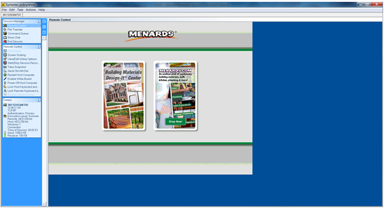

FTP to the kiosk PCs in the Lab (Cant connect to Beast machine anymore however)
If you ever want to transfer data, images, files from and between the lab PC and your PC, use FTP on your PC to connect to the lab PC. You can't do it vice-versa. For the beast machine, just use the T drive as Beast has access to that drive.
Steps
- open a Window Explorer window > Type in URL below to connect to the 8888 01 PC
- \\10.88.88.64\c$ -- for 8888 01
- or use the DNS name
- desgnit.menards.8888.64
- user and pass are Here
- Sometimes you will need to use one or the other logins depending one which machine you connect to
Check if a PC is up and running anywhere
- Windows CMD > ping -t dsgnit01.storeNumber.st.menards.net
- If there's ping then the PC is up and running, if not, then it is off
- ex: ping -t dsgnit01.3011.st.menards.net
Connect to a PC running anywhere external - (this is not screen control) - get the ip using(nslookup)
- First check if the PC has ping using above method
- Windows CMD > nslookup dsgnit01.storeNumber.st.menards.net : use st for external and leave out for internal
- 4444 are consider external, 8888 internal
- get the address or IP and use that in the windows explorer
- ex: \\10.11.11.l111\c$
- Put in proper user and pass when prompt
- flooring kiosk
- nslookup ucflcw01.4444.st.menards.net
Connect directly and control PC screen - User sees your every move
- You must first signed a registration doc form before you can have proper athenthication
- Must call and make communication first to the client that you will be remoting into the PC
- No communication = no remoting > Terminate connection if you are leaving for any reason or done fixing issue
- start > all programs > symantec > pcA quick connect
- type IP or DNS ex: dsgnit01.4444.st.menards.net
- connect > if popup click yes > trust always
- there are two types of login
- Store login: user:menardsdesignit - pass:S0FuNNy#1
- campus login: use windows credential - user: menards\username
- will take 30-50 secons to connect if no one is there to click yes on their end
- The client has the ability to deny on their end, if not response auto connection will take place
- After connecting, you must use notepad (something similar) and post the following message
- Hello, this is Xai Lao from the IS Department team and I have current control of your PC
- Log your access and keep it for min 6 months
Usage once connected
- 
- To end > end session (on left hand side)
- F6 to bring up program manager
- To use alt-tab or ctrl-alt-del you need to have your scroll lock on
- use chat window for informing client
Connect to Beast
Use the T Drive, cannot have access to it anymore as pass and user changed
Get screen capture or file of the kiosk PC in lab
- Print/Screen on windows will copy the screen to the clipboard, you need to paste using paint program to save it.
- F6 to and put in pass to Open windows explorer and create a new bitmap file in a folder (logs is a good place)
- open the bitmap file and paste ctl + V and save the file
- Back at your PC, FTP C dollar sign into that pc and grab that image